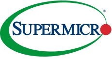

Ranglister Tech-hardware & optik Super Micro Computer

Super Micro Computer
69
15070100
Et blik på de samme fund, ikke en ny score. Sådan virker det
En god forretning med et reelt spørgsmålstegn: prisen, en revne eller begge dele.
Største fradrag
- Pengestrøm−10
- Kundekoncentration−10
- Governance og retssager−10
Styrker
- Skin in the game+2
- Estimater+2
Sådan er scoren bygget op
Fra 100 til 69, trin for trin: point trækkes fra for forretningen, prisen og revnerne, lægges til for dokumenterede styrker, og så følger tre datajusteringer.
Start
Score
Hold musen over et trin eller vælg det for at se, hvad der drev det. Trin med fund åbner dem nedenfor.
Nøgletal
Pr. 6 nov. 2026. Analytikernes kursmål er ofte optimistiske; læs opsiden som et fingerpeg, ikke en prognose.
- Pris
- 28.76 USD
- Analytikernes mediankursmål
- 45.00 USD
- Opside til median
- +56.5%
- Analytikere
- 18
- Kursmålsinterval
- 15.00 – 65.00 USD
- 52-ugers ændring
- −32%
- P/E (historisk)
- 6.1
- Forward P/E
- 4.7
- PEG
- 0.21
Fund
Hvert fradrag og hvert plus med sin kilde. Åbn et trin for at læse dem.
Forretning
Bliver virksomheden stærkere, ikke bare større? · 3 fund−14 af −30
- −6MarginBruttomarginen er faldet fra 18,0 % (FY23) over 13,8 % og 11,1 % til 10,8 % (FY26). Q4 gav 17,5 % takket være et rigere kundemix, men helåret lå under FY25.
- −5ROICROIC er faldet fra 36,3 % (FY23) over 29,6 % og 18,0 % til 19,8 % i FY26 og 14,0 % på aktuel basis, fordi lager og tilgodehavender binder stadig mere kapital.
- −3VoldgravServere er et konkurrencepræget marked med lav margin (Dell, HPE og ODM'er). Q1 FY27-guidance (omsætning 14,5–15,5 mia. $, GAAP EPS 0,89–0,98 $) antyder en nettomargin på ca. 4,5 % mod 10,6 % i Q4.
Pris
Dagens multipler mod selskabets egen historik og dets sammenlignelige selskaber. · 1 fund−4 af −35
- −4Multipler mod egen historik og peersForward P/E 9,6 mod 7,0–25,4 i FY22–26; EV/EBITDA 10,3 mod 6,6–38,5; P/S 0,70 mod 0,40–3,20; P/B 2,7. Lavt mod historikken og mod Dell (forward P/E 19), men FCF er negativ, så P/FCF kan ikke beregnes, og den lave pris afspejler governance- og marginrisikoen.
Revner
Cash flow, kunder, gæld, insidere, guidance og det, der ligger bag hovedtallene. · 7 fund−35 af −35
- −10PengestrømPengestrømmen fra drift var −6,81 mia. $ og FCF −6,97 mia. $ i FY26. Lageret steg 8,9 mia. $ til 12,9 mia. $ og tilgodehavender 3,9 mia. $; kun Q4 gav positiv driftspengestrøm (0,75 mia. $).
- −10KundekoncentrationÉn kunde stod for 62,6 % af salget i Q2 FY26 og 45,1 % i første halvår ifølge 10-Q.
- −10Governance og retssagerBDO har givet en negativ erklæring om den interne kontrol, og væsentlige svagheder fra februar 2025 er stadig ikke udbedret. CFO'en skulle erstattes, men sidder stadig efter 14 måneder. Medstifter Wally Liaw er tiltalt (marts 2026) for at have smuglet servere med NVIDIA-chips for ca. 2,5 mia. $ til Kina. Bestyrelsens undersøgelse (august) frikendte den nuværende ledelse, men gruppesøgsmål verserer (lead plaintiff udpeget 13/7).
- −4Gæld og udvandingI juni 2026 hentede selskabet 7 mia. $ i aktier og konvertible præferenceaktier; aktietallet er +11 % på et år (+1,9 % i seneste kvartal). Nettogæld 1,7 mia. $.
- −3Guidance og leveringQ4-omsætningen på 11,1 mia. $ missede forventningen på 11,55 mia. $, og Q3 lå også i bunden af guidance. Q1-guidance annualiserer til ca. 60 mia. $ mod helårsguidance på 65–72 mia. $, så resten af året skal accelerere kraftigt.
- −2InsiderhandelCEO'ens ægtefælle solgte aktier for 7,7 mio. $ i september; ingen insiderkøb fundet.
- −3Makro og sentimentAfhængig af AI-capex; konsensus er Hold, og Susquehanna (Sell, 15 $) og en anden Sell (34 $) ligger langt under kursen på ca. 42 $.
Plus
Kun dokumenterede styrker. · 2 fund+4 af +15
- +2
- +2EstimaterFY27-guidance på 65–72 mia. $ i omsætning (+66–84 %), ca. 16 mia. $ over konsensus i midtpunktet.
Forbehold
Det, scoren ikke fanger, eller hvor dataene er svage.
BDO har givet en negativ erklæring om den interne kontrol, og der er stadig ingen ny CFO 14 måneder efter anbefalingen. En medstifter er tiltalt for smugling af servere for 2,5 mia. $ til Kina, og gruppesøgsmål verserer. Én kunde stod for 62,6 % af salget i et kvartal. FCF var −7,0 mia. $ i FY26. Bruttomarginen på 17,5 % i Q4 er ikke bevist holdbar, og Q1-guidance antyder en nettomargin på ca. 4,5 %.
Også i Tech-hardware & optik
De højeste scorer i samme branche.